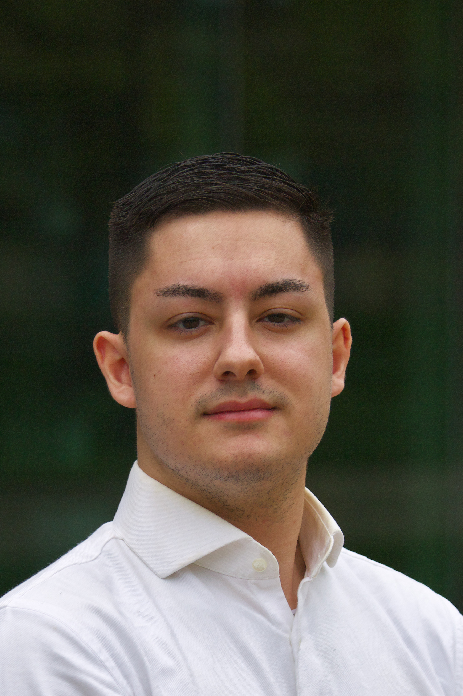
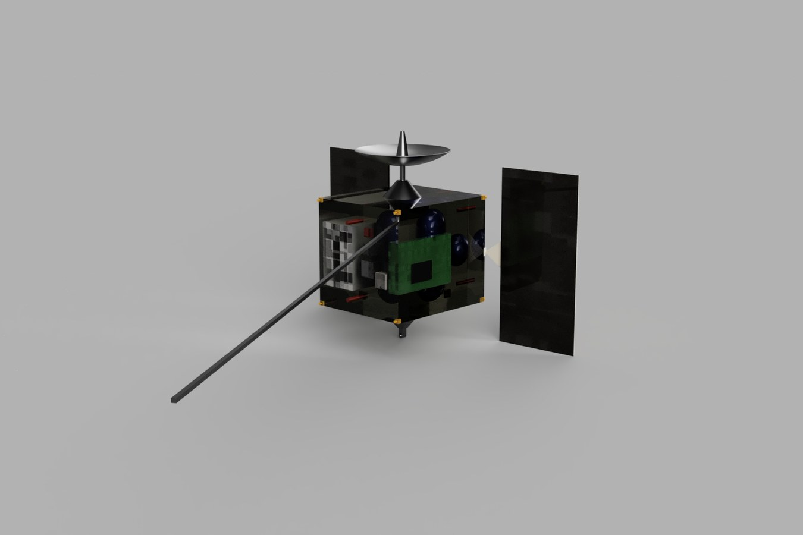
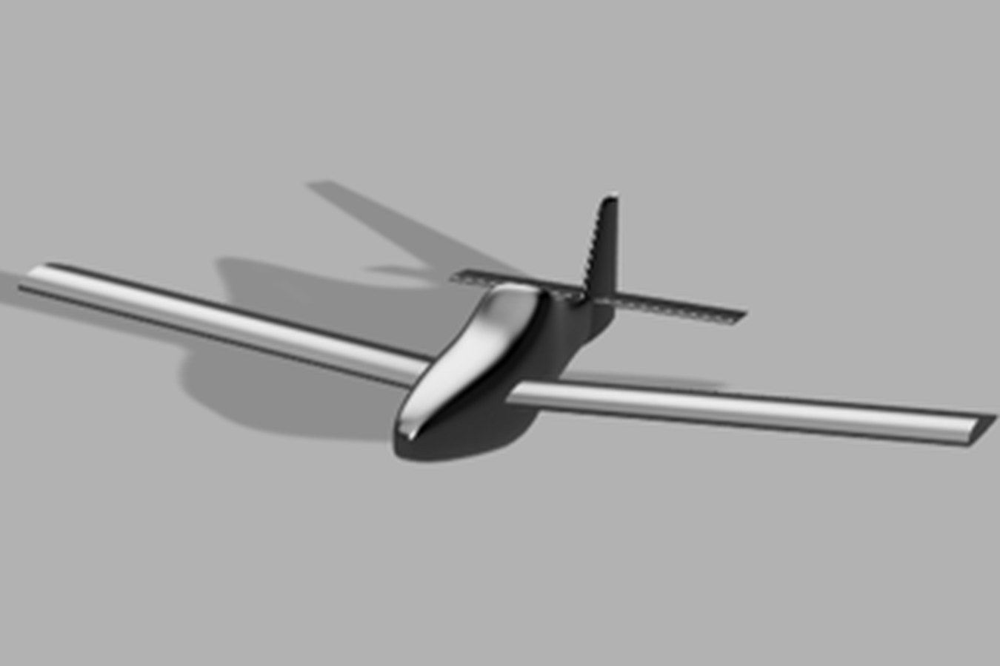
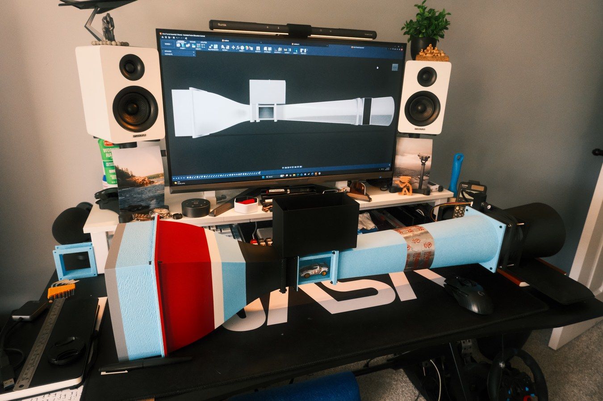
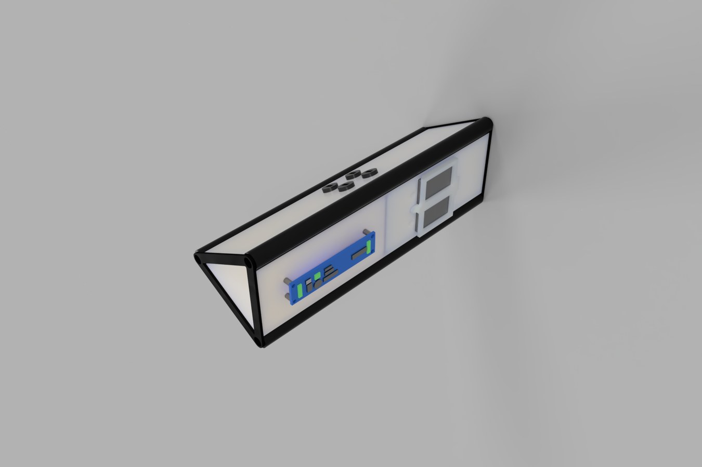

Hi, I'm Kaleb!
I am a graduate student at the University of California San Diego pursuing a master’s degree in aerospace engineering. My interests include propulsion, aerodynamics, and additive manufacturing, with a particular focus on applying engineering fundamentals to practical, high performance aerospace systems. Through coursework and hands on projects, I have developed experience in design, analysis, and problem solving across these areas. This portfolio highlights selected work that reflects my technical background, curiosity, and continued growth as an engineer.

Projects

HEIMDALL Mission Concept
A Sun-Earth L4 heliophysics observatory and Earth-Mars communications relay designed for the 2026 AIAA Undergraduate Space RFP.
View details
Sky Combine Agricultural Aircraft
Team-led agricultural aircraft concept based on AIAA SHOTS design and ferry mission requirements.
View details
Desktop Wind Tunnel
A desktop wind-tunnel build with CAD-to-hardware comparisons.
View details
Rocket Avionics Bay
A PLA prototype of a modular avionics bay for Tydirium, a student sounding rocket.
View detailsCoursework
Spacecraft Design
Systems engineering, mission planning, and subsystem design for a requirements-driven spacecraft concept.
View detailsAircraft Design
Requirements-driven conceptual aircraft design, from configuration through performance and control.
View detailsSystems Control & Design
Dynamic modeling, stability analysis, and feedback control for an aircraft pitch-control application.
View detailsAerospace Laboratory II
Laboratory work in sensing, actuation, system identification, and PID control of a quadcopter arm.
View detailsAerospace Laboratory I
Laboratory work in aerodynamic instrumentation, flow measurement, pressure analysis, and heat transfer.
View detailsCAD & CAM
CAD, GD&T, FEA, assembly design, and CAM programming for manufacturing.
View detailsInnovative Design in Engineering
Human-centered design, user research, and iterative prototyping for a stair-transport concept.
View detailsDynamics
Kinematics, kinetics, and dynamic-system design applied to a crossbow-style softball launcher.
View detailsStatics
Engineering mechanics foundations in equilibrium, free-body diagrams, forces, moments, and structural analysis.
View details